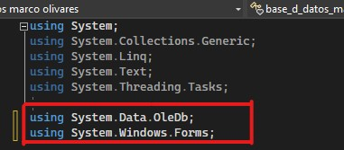

guia de C# con Access
primero tenemos importar las librerias necesarias para que nuestro formulario use Access o cualquier base de datos
luego declaramos la cadena necesaria para conectar el tipo de base de datos (en este caso con Access)
el paso siguiente seria declarar las variables para trabajar con la base de datos y poder empezar con las operaciones basicas.
Por ultimo tenemos que crear una funcion para que todos los formularios puedan usar la base de datos para esto usamos el comando TRY.